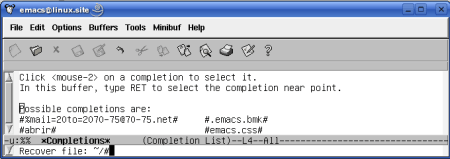
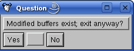

2.Guardar Archivos y Salir de Emacs
Pág.Anterior | Índice | Pág.Siguente
En este capítulo se tratarán los siguientes aspectos:
- Como guardar los archivos abiertos.
- Guardar archivos con otro nombre.
- El sistema de "autoguardado" de Emacs.
- Como "suspender" Emacs.
- Como cerrar Emacs.
2.1.Guardar Archivos
Pág.Anterior | Índice | Inicio Página | Pág.Siguente
Las órdenes para guardar un archivo son:
- Mediante el comando : C-x C-s .
- Mediante la opción del menú : File->Save (current buffer)
- Mediante el "comando largo" : M-x save-buffer <Enter>
Veamos ,gráficamente, como se comportan los estos comandos:
Una vez dada la orden de guardar, mediante cualquiera de las tres opciones descritas, Emacs se comportará de forma diferente, dependiendo de si el archivo que queremos guardar tiene o no un nombre asignado:
Si el archivo que queremos guardar no tiene un nombre asignado, ( buffer *scratch* ), Emacs trasladará el cursor al área del mini-buffer y nos solicitrá que introduzcamos un nombre para el archivo, con el siguiente mensaje: File to save in:~/. ( novela, en este ejemplo) :
En el caso de que el archivo a guardar tenga ya nombre asignado ( por ejemplo, hemos abierto o modificado un archivo existente o hemos estado trabajando con un archivo nuevo, creado con C-x C-f ), Emacs lo guardará sin más, con las modificaciones introducidas, presentándonos el mensaje: Wrote /archivo
Si damos la orden de guardar un archivo en el que no se le hayan realizado modificaciones, Emacs nos advertirá con el mensaje No changes need to be saved, en el mini-buffer.
Esto ocurrirá en el caso que intentemos guardar el archivo mediante el comando C-x C-s, ya que la opción de menú File->Save (current buffer) solo se activa cuando se han realizado modificaciones en el archivo abierto.
2.2.Guardar con otro nombre
Pág.Anterior | Índice | Inicio Página | Pág.Siguente
En ocasiones puede interesarnos guardar el archivo modificado sin sobreescribir el original o, sencillamente, guardar una cópia del archivo. En otras palabras, guardar el buffer corriente en otro archivo.
Es el equivalente al comando Guardar Como... presente en muchas aplicaciones
Emacs nos proporciona esta posibilidad através del comando:
- Comando : C-x C-w
- Opción de menú : File-->Save Buffer As..
- Comando "largo" : M-x write-file <Enter>
La secuencia de esta función sería:
Al dar la orden de guardar con otro nombre, Emacs situa el cursor en el mini-buffer y nos solicita que introduzcamos el nuevo nombre para el archivo. ( En el ejemplo: novela_B )
Una vez se ha realizado el cambio de nombre y pulsada <Enter>, el buffer que se muestra es el del nuevo archivo.
 |
Este comando es útil si deseamos poder editar un archivo sobre el que sólo tengamos permiso de lectura: Se puede abrir en un buffer con el comando C-x C-f y guardarlo con otro nombre con C-x C-w. Una vez guardado, este nuevo archivo puede editarse.
2.3.Sistema de "autoguardar" de Emacs.
Pág.Anterior | Índice | Inicio Página | Pág.Siguente
Con el fin de proteger los cambios realizados de cualquier imprevisto que impida su normal almacenamiento Emacs, periodicamente, escribe un archivo de "autoguardado" para cada archivo que se está editando en aquel momento. De hecho, si observáramos atentamente el mini-buffer podríamos ver como, cada cierto tiempo aparece el mensaje : Auto saving.
En el directorio en el que operamos, podemos encontrar estos archivos con los mismos nombres de los archivos que estamos editando, pero con un caracter # al principio y al final del mismo.
Cuando un archivo se guarda por via "normal", se borra su correspondiente archivo de autoguardado.
Es conveniente saber que, si no se ha guardado normalmente un archivo modificado, al reiniciar Emacs los cambios estarán en el archivo de autoguardado generado y no en el archivo original.
Para recuperar un archivo de autoguardado:
- M-x recover-file <Enter>
Veamos la secuencia de esta función de recuperación:
Introducimos el comando.
| " width="450" height="127" border="0" /> |
Una vez pulsada <Enter>, Emacs nos pide que introduzcamos el nombre del archivo a recuperar.
 |
Podemos introducir el nombre, incluyendo los caracteres "#" al principio y al final del mismo, o hacer uso de la función de autocompletado de la tecla <Tab>:
Introduciendo "#" y pulsando <Tab> aparecerá un buffer conteniendo la relación de todos los archivos cuyo primer caracter de su nombre es #, pudiendo seleccionar el buscado por los medios señalados en la sección: 1.2.Autocompletado
|  |
Emacs procede al autoguardado cada cierto número de pulsaciones o cuando se finaliza Emacs de forma "anormal". Por defecto, se procede a un autoguardado cada 300 pulsaciones, aunque dicha frecuencia puede cambiarse mediante al variable auto-save-interval
Una característica a tener en cuenta: Cuando eliminamos una parte importante del archivo que estamos editando, Emacs suspende el autoguardado y nos lo advierte. Si deseamos reactivar la función de autoguardado deberemos guardar el archivo con C-x C-s o teclear el comando: M-1 M-x auto-save <Enter>
2.4.Como "suspender" Emacs.
Pág.Anterior | Índice | Inicio Página | Pág.Siguente
La "suspensión" de la aplicación, en entornos gráficos, no es más que su "iconificación": Emacs desaparece de la pantalla y queda reducido a un icono, normalmente en la barra de tareas. Activando este icono, Emacs se reactiva tal como lo dejamos en el momento de la "suspensión".
El comando que usaremos para "suspender" Emacs es: C-z
2.5.Salir de Emacs.
Pág.Anterior | Índice | Inicio Página | Pág.Siguente
El comando que podemos utilizar para salir de Emacs es:
- Comando : C-x C-c
- Opción de menú : File->Exit Emacs
- Comando "largo" : M-x save-buffers-kill-emacs <Enter>
Si se han realizado cambios en el buffer, Emacs nos pedirá si deseamos guardarlos. Si contestamos negativamente a esta pregunta de Emacs, nos pedirá que confirmemos la salida. Veamos la secuencia:
Al dar la orden de cierre, si se han guardado los cambios Emacs se cerrará sin más.
En el caso de que no se hayan guardado los cambios realizados, Emacs, mediante un mensaje en el mini-buffer , nos preguntará si deseamos guardar los cambios.
Si contesta afirmativamente; y, Emacs salvará los cambios y se cerrará.
Si contestamos negativamente; n, , entonces nos aparecerá la siguiente pantalla en la que se nos pide que confirmemos la orden de cierre de la aplicación:
En el caso de contestar afirmativamente; yes, Emacs finalizará, sin guardar los cambios.
En caso de respuesta negativa; no, Emacs vuelve al modo de edición anterior a la entrada de la orden de cierre.
En determinados entornos gráficos, cuando la orden de cierre se dá desde la opción del menú File-->Exit Emacs los mensajes en el mini-buffer pueden ser sustituidos por una ventana parecida a esta para el primer diálogo:
Y como ésta para la confirmación de la salida sin guardar:
|  |
Una última cuestión relacionada con la salida de Emacs: Si salimos de Emacs sin haber guardado los cambios realizados en el archivo que estábamos editando, al volver a abrir éste archivo, Emacs nos puede advertir de que existe un archivo de autoguardado con los datos no salvados durante el cierre de la aplicación. También nos apuntará la conveniencia de utilizar el comando
Veamos una muestra gráfica:
Hemos abierto un archivo, pereira, del cual no habíamos guardado las modificaciones al cerrar Emacs.
En el mini-buffer aparece la información que se ha citado antes. Dicha información desaparecerá del mini-buffer con la primera acción que realicemos.